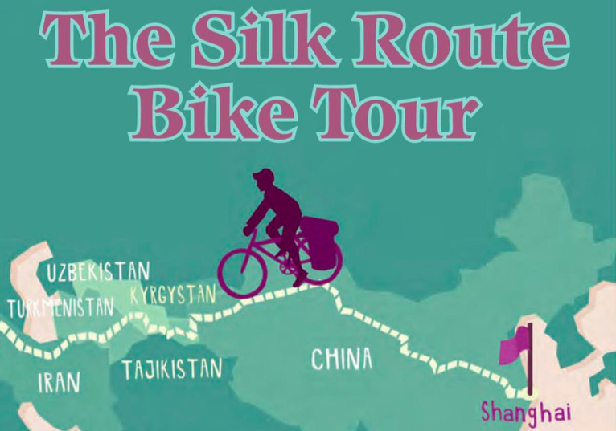

The Silk Route Bike Tour: is it the greatest journey in the world? The company calls it 'the longest, hardest, highest, hottest, coldest bicycle tour in the world'. In eighteen weeks you travel over 12,000 kilometers through seven different countries and have the most exciting ride of your life.
'A thousand years ago people went by camel and did about twenty-five kilometers a day,' says Nate Cavalieri, one of the Silk Route Tour staff. 'But on a bike you do twenty-file kilometers in an hour.' And along the way you see some of the most beautiful places in the world.
From Shanghai, you go across Asia, through Iran and arrive in Istanbul, Turkey, at the end. You travel across the deserts of China and cycle the Pamir Highway to over 4,600 meters, across the 'Roof of the World' in the mountains of Tajikistan. On the way there are villages, markets and ancient buildings.
At night, you stay in ancient roadside hotels or in camps. A chef cooks dinner for about half of the 133 days; on other days cyclists can eat in local restaurants or shop in local markets for their food.
One cyclists blogged, 'The best thing was the friendliness of the people.' And the worst things? 'The snow and the cold in the Pamirs.'
So is it the greatest journey in the world? Cyclist and blogger Miles MacDonald thinks so. 'The Silk Route is a true expedition. It is long and difficult, but it's such an amazing experience thay you arrive in Istanbul a completely changed person.'
Fist we go to ..., then we visit the oldest / most famous ... in ...
London is the capital of the UK. It's in the south-east of England on the River Thames. Tourists love its famous sites: Buckingham Palace, Big Ben, the wonderful art galleries and museums. But where do you go to escape the tourists? Here are three ideas:
1. Little Venice - This is a beautiful area in the north of London with water all around. It's a good place to sit, have a coffee and watch people on their houseboats.
2. Sir John Soane's Museum - John Soane was an architect and an art collector and in his house (the museum) there are many strange and amazing objects. Morning is the best time to go there - it's nice and quiet then.
3. Temple Gardens - These are some of my favorite gardens in London. They're in the center of London near the River Thames in an area for lawyers and law companies. They're perfect for a walk or a picnic lunch especially in summer.
Key Phrases
It's in the [north / south / west / east] of ...
It's [near / next to] ...
There are lots of ...
It's got lots of ...
You can [find / see / eat] ...
It's [the best place to / one of the best places to] ...
Most people don't know about it.
People [don't usually / often] go there.
It's really [interesting / delicious / fun / quiet / beaufitul].